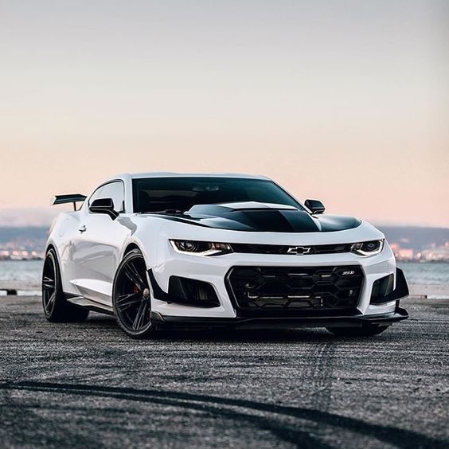

Camaro ZL1

O Camaro ZL1 é a fusão perfeita entre potência bruta e design agressivo. Equipado com um motor V8 supercharged de alto desempenho, ele entrega uma experiência de condução que acelera o coração e domina as ruas. Cada detalhe, desde a aerodinâmica refinada até os acabamentos internos de alta qualidade, reflete a engenharia americana focada em velocidade, controle e emoção. Para quem busca um carro que combine estilo imponente e performance de tirar o fôlego, o Camaro ZL1 é a escolha definitiva.
| Especificação | Detalhes |
|---|---|
| Motor | V8 Supercharged 6.2L |
| Potência | 650 cv |
| Torque | 881 Nm |
| Transmissão | Manual de 6 marchas ou Automática de 10 marchas |
| 0-100 km/h | 3,5 segundos |
| Velocidade Máxima | 320 km/h |
| Consumo Médio | 6 km/l (cidade) | 10 km/l (estrada) |
| Peso | 1.940 kg |
| Dimensões | Comprimento: 4.784 mm |
| Largura: 1.897 mm | |
| Altura: 1.345 mm |